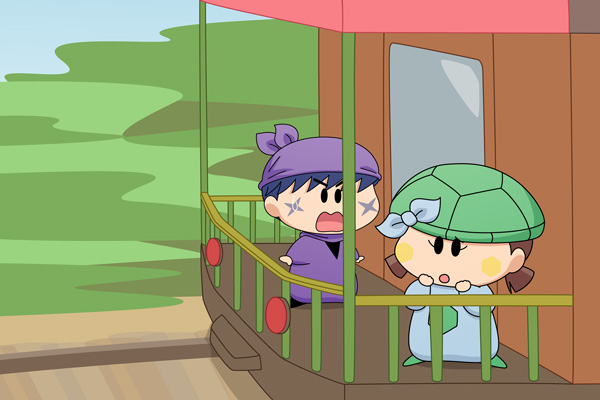

サスケ「ど、どうしよう・・」
カメリ「わたしたち～、違う切符を～持ってるから～、
見つかったら～降ろされちゃうよ～～」
サスケ「こんな森の中で降ろされたら大変だぜ…。
何とか次の駅まで行かなきゃ…」
カメリ「うーん、次の駅まで～見つからないかなぁ～」
サスケ「オイラに任せろだぜ！」
サスケとカメリはそーっと席を立ちました。
車掌さんに怪しまれないように・・・。
しかしぎこちない二人の表情と歩き方は、誰の目にも怪しく映りました。
二人はカチコチな歩き方で、車掌さんとは反対の方向へと向かいました。
サスケ「ここに逃げるぜ！」
二人は汽車の一番後ろのドアを開け、展望デッキに逃げ込みました。
サスケはドアを閉め、ドアに付いた窓から車内の様子をうかがいます。
しばらくして、車掌さんの姿が窓越しに見えてきました。

サスケ「わわっ、車掌さんが近づいてくるぜ…」
カメリ「どうしよう～～っ」
二人が慌てていると、汽車のスピードが落ちていきました。
どうやら次の駅が近づいてきたようです。
昔の時代を舞台にした作品では、汽車の展望デッキがよく出てきますね。現代の電車には付いていないので、私は昔からこの展望デッキに憧れていたりします。時には夢の中にも出てきたりしますが、その場合は決まって何者かに追い詰められるんですよね。サスケとカメリのドキドキが皆さんにも伝わりますように。
(2012/5/9)